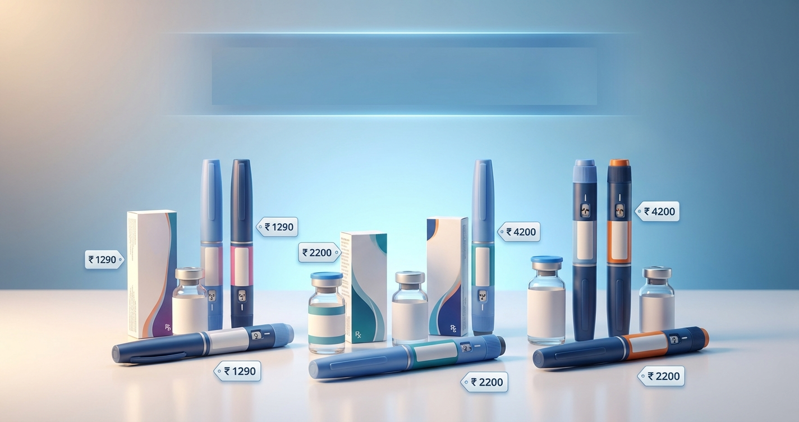

Four days ago, everything changed for 101 million Indian diabetics.
On March 20, 2026, Novo Nordisk's patent on semaglutide — the blockbuster molecule behind Ozempic (for diabetes) and Wegovy (for weight loss) — expired in India. Within hours, 42 Indian pharmaceutical companies launched their generic versions, creating one of the largest single-day drug launches in Indian pharma history.
The result? A medication that cost ₹8,800-16,400/month from Novo Nordisk is now available starting at ₹1,290/month — a savings of up to 90%.
But with 50+ brand names flooding the market, choosing the right one is confusing. Which company should you trust? Pen or vial? What's the real monthly cost? This guide breaks it all down.
📋 What's Inside
- What Is Semaglutide & Why the Hype?
- The Patent Expiry: What Happened on March 20
- Every Brand & Price — Complete Comparison Table
- Natco — SEMANAT & SEMAFULL (Cheapest)
- Dr. Reddy's — Obeda (First DCGI-Approved)
- Glenmark — Glipiq
- Sun Pharma — Noveltreat & Sematrinity
- Zydus & Lupin — Semaglyn, Semanext, Livaris
- Alkem — Semasize & Obesema
- Vial vs Pen: Which Should You Choose?
- Semaglutide vs Tirzepatide: Which Is Better?
- Side Effects & Safety
- How to Start: Step-by-Step Guide
- FAQs
1. What Is Semaglutide & Why the Hype?
Semaglutide is a GLP-1 receptor agonist — a class of injectable medications that mimic a natural gut hormone called GLP-1 (glucagon-like peptide-1). Here's what it does:
- Stimulates insulin release — but only when blood sugar is high (low hypoglycemia risk)
- Suppresses glucagon — stops the liver from dumping glucose
- Slows gastric emptying — food moves through your stomach slower, reducing post-meal spikes
- Reduces appetite — acts on brain hunger centres, leading to 10-15% body weight loss
- Cardiovascular protection — 20% reduction in major cardiac events (SUSTAIN-6 and SELECT trials)
Originally developed for Type 2 diabetes (as Ozempic), semaglutide became a global phenomenon when higher doses (as Wegovy) showed dramatic weight loss results. Hollywood celebrities, Silicon Valley executives, and eventually millions of people worldwide started using it — creating shortages that made it inaccessible to the diabetics who needed it most.
In India, branded Ozempic was available but priced at ₹8,800-16,400/month — unaffordable for the vast majority of the 101 million Indians with Type 2 diabetes. That all changed on March 20.
2. The Patent Expiry: What Happened on March 20
Novo Nordisk's Indian patent on semaglutide expired on March 20, 2026. Indian pharma companies had been preparing for months — some had already received DCGI (Drugs Controller General of India) approvals and were ready to launch the moment the patent clock hit zero.
Here's what happened within the first 72 hours:
- 42 manufacturers launched or announced generic semaglutide
- 50+ brand names entered the market
- Prices ranged from ₹1,290 to ₹5,000/month — compared to ₹8,800-16,400 for branded Ozempic
- Both vial (syringe-draw) and pre-filled pen formats launched simultaneously
- Two indications covered: Type 2 diabetes and chronic weight management
This is arguably the most significant drug price disruption in India since the generics revolution in HIV/AIDS medications. For the first time, a world-class GLP-1 therapy is within reach of middle-class Indians — not just the wealthy.
3. Every Brand & Price — Complete Comparison Table
Here's the definitive comparison of every major generic semaglutide brand available in India as of March 24, 2026:
| Company | Brand Name | Format | Strengths | Monthly Cost | Indication |
|---|---|---|---|---|---|
| Natco Pharma | SEMANAT | Vial | 2 mg, 4 mg, 8 mg | ₹1,290 — ₹1,750 | Diabetes |
| Natco Pharma | SEMAFULL | Vial | 2 mg, 4 mg, 8 mg | ₹1,290 — ₹1,750 | Weight loss |
| Dr. Reddy's | Obeda | Pre-filled pen | 2 mg, 4 mg | ₹4,200 | Diabetes |
| Glenmark | Glipiq | Vial + Pen | 2 mg, 4 mg, 8 mg | ₹1,300 — ₹1,760 | Diabetes |
| Sun Pharma | Sematrinity | Pre-filled pen | Multiple | ₹3,000 — ₹5,200 | Diabetes |
| Sun Pharma | Noveltreat | Pre-filled pen | Multiple | ₹3,600 — ₹8,000 | Weight loss |
| Zydus Life | Semaglyn / Mashema / Alterme | Reusable pen (cartridge) | 15 mg/3 ml | ₹2,200 | Diabetes |
| Lupin (co-marketed) | Semanext / Livaris | Reusable pen (cartridge) | 15 mg/3 ml | ₹2,200 | Diabetes |
| Alkem Labs | Semasize / Obesema | Pre-filled pen | Month's supply | ₹1,800 | Diabetes + Weight |
| Novo Nordisk | Ozempic (branded) | Pre-filled pen | 0.25, 0.5, 1 mg | ₹8,800 — ₹16,400 | Diabetes |
4. Natco — SEMANAT & SEMAFULL (Cheapest Option)
🏷️ Natco Pharma — SEMANAT (Diabetes) / SEMAFULL (Weight Loss)
Why it's noteworthy: Natco made semaglutide affordable for the masses. Their vial-based approach — skipping the expensive pen device — cuts costs by 70% compared to pen-based generics.
- Format: Multi-dose vials (2 mg/1.5 ml, 4 mg/3 ml, 8 mg/3 ml)
- Administration: Draw dose with insulin syringe, inject subcutaneously once weekly
- Pen version: Expected April 2026, priced ₹4,000-4,500/month
- Partnership: Co-marketed with Eris Lifesciences for wider distribution
- Storage: Refrigerate (2-8°C). Once opened, use within 56 days at room temperature
5. Dr. Reddy's — Obeda (First DCGI-Approved Generic)
🏷️ Dr. Reddy's Laboratories — Obeda
Why it's noteworthy: Obeda was the first generic semaglutide to receive DCGI approval in India — a significant credibility marker. Dr. Reddy's is one of India's most trusted pharma companies globally.
- Format: Pre-filled, disposable pen
- Strengths: 2 mg and 4 mg
- Administration: Once-weekly subcutaneous injection — dial the dose and click
- Advantage: First DCGI-approved generic = rigorous bioequivalence data on file
- Best for: Patients who want pen convenience from a top-tier brand
6. Glenmark — Glipiq
🏷️ Glenmark Pharmaceuticals — Glipiq
Why it's noteworthy: Glipiq offers both vial and pen formats, giving patients a choice. The vial pricing is competitive with Natco, and the pen version provides an upgrade path.
- Format: Vial + pre-filled pen options
- Strengths: 2 mg, 4 mg, 8 mg
- Vial cost: ₹325-440/week (₹1,300-1,760/month)
- Best for: Patients who want to start with vials and potentially switch to pens later
7. Sun Pharma — Noveltreat & Sematrinity
🏷️ Sun Pharmaceutical — Sematrinity (Diabetes) / Noveltreat (Weight Loss)
Why it's noteworthy: Sun Pharma is India's largest pharmaceutical company by market cap. They've launched two distinct brands — one for diabetes, one specifically approved for chronic weight management. Noveltreat is one of the few generics explicitly marketed for weight loss in India.
- Sematrinity: For Type 2 diabetes. Pre-filled pen. ₹3,000-5,200/month depending on dose
- Noveltreat: For chronic weight management (BMI ≥30 or ≥27 with comorbidities). Higher doses available. ₹3,600-8,000/month
- Format: Both are pre-filled pens
- Best for: Patients who want the assurance of India's largest pharma company, or who need semaglutide specifically for weight management
8. Zydus & Lupin — Semaglyn, Semanext, Livaris
🏷️ Zydus Lifesciences (+ Lupin co-marketing) — Semaglyn / Mashema / Alterme / Semanext / Livaris
Why it's noteworthy: Zydus introduced a reusable multi-dose pen device with replaceable 15 mg/3 ml cartridges — a middle ground between cheap vials and expensive disposable pens. Lupin has a co-marketing agreement to sell the same formulation under the Semanext and Livaris brands.
- Format: Reusable pen + replaceable cartridge (15 mg/3 ml)
- Monthly cost: ~₹2,200 (cartridge replacement cost)
- Brands: Semaglyn, Mashema, Alterme (Zydus) / Semanext, Livaris (Lupin co-marketed)
- Best for: Patients who want pen convenience at a lower price than disposable pens
9. Alkem — Semasize & Obesema
🏷️ Alkem Laboratories — Semasize / Obesema
Why it's noteworthy: Alkem offers a pre-filled pen at ₹450/week — the cheapest pen-based option in India. If you want the convenience of a pen without paying ₹4,000+/month, this is the sweet spot.
- Format: Pre-filled pen (1-month supply per pen)
- Weekly cost: ₹450/week = ₹1,800/month
- Best for: Budget-conscious patients who don't want to deal with vials and syringes
10. Vial vs Pen: Which Should You Choose?
This is the biggest decision you'll face. Here's an honest comparison:
| Factor | Vial + Syringe | Pre-filled Pen | Reusable Pen (Cartridge) |
|---|---|---|---|
| Monthly cost | ₹1,290-1,760 | ₹1,800-4,200 | ~₹2,200 |
| Ease of use | Moderate — need to draw dose with syringe | Easy — dial and click | Easy — insert cartridge, dial and click |
| Dose accuracy | Good with insulin syringes, but requires care | Excellent — built-in dose mechanism | Excellent |
| Portability | Less portable (vial + syringes + alcohol swabs) | Most portable (single pen) | Good (pen + spare cartridges) |
| Waste | Syringes + sharps disposal needed | Whole pen disposed after use | Cartridges disposed, pen reused |
| Best for | Cost-sensitive patients, insulin-experienced users | First-time injectables, convenience priority | Value + convenience balance |
11. Semaglutide vs Tirzepatide: Which Is Better?
With tirzepatide (Mounjaro/Yurpeak) also available in India, here's how they compare:
| Factor | Semaglutide (Generic) | Tirzepatide (Yurpeak/Mounjaro) |
|---|---|---|
| Mechanism | GLP-1 agonist | Dual GIP + GLP-1 agonist |
| HbA1c reduction | 1.5-1.8% | 2.0-2.3% (slightly better) |
| Weight loss | 5-7 kg average | 7-12 kg average (better) |
| Monthly cost (India) | ₹1,290-4,200 | ₹13,125-25,781 |
| Generic available? | Yes (42+ brands) | No — patent protected |
| Cardiovascular data | Strong (SELECT trial) | Emerging (SURPASS-CVOT ongoing) |
| Best for | Most Indian diabetics (best value) | Severe obesity + diabetes if budget allows |
12. Side Effects & Safety
Semaglutide's side effects are well-documented from years of clinical use. They're the same for generics as for branded Ozempic:
Common Side Effects (affect 10-30% of users)
- Nausea — most common, especially in the first 4-8 weeks. Usually improves as your body adjusts
- Vomiting — less common than nausea, dose-dependent
- Diarrhea — typically mild, resolves in 2-4 weeks
- Constipation — some patients experience this instead of diarrhea
- Reduced appetite — this is actually the therapeutic effect for weight loss
- Injection site reactions — mild redness or swelling, uncommon
Serious Side Effects (rare but important)
- Pancreatitis — risk of ~0.3%. Stop medication and seek emergency care if you have severe persistent abdominal pain
- Gallbladder issues — rapid weight loss can trigger gallstones. Stay hydrated, report right-upper-abdomen pain
- Thyroid C-cell tumors — seen in rodent studies at very high doses. Contraindicated in patients with personal/family history of medullary thyroid carcinoma (MTC) or MEN2 syndrome
- Hypoglycemia — rare when used alone, but higher risk if combined with sulfonylureas or insulin
- Personal or family history of medullary thyroid carcinoma (MTC)
- Multiple Endocrine Neoplasia syndrome type 2 (MEN2)
- History of pancreatitis
- Pregnant or planning pregnancy (discontinue at least 2 months before conception)
- Type 1 diabetes or diabetic ketoacidosis (semaglutide is for Type 2 only)
- Severe gastroparesis or GI motility disorders
13. How to Start: Step-by-Step Guide for Indian Patients
Ready to talk to your doctor about semaglutide? Here's the practical playbook:
Step 1: Get the Right Doctor
See an endocrinologist or diabetologist — not a general practitioner. Semaglutide requires proper patient selection, dose titration, and monitoring. Ask specifically about GLP-1 therapy.
Step 2: Required Tests Before Starting
- HbA1c (current diabetes control)
- Kidney function (eGFR, creatinine)
- Thyroid function (TSH, T3, T4) — to rule out thyroid issues
- Lipase/amylase (pancreatic baseline)
- Liver function tests
Step 3: Standard Dose Titration
| Week | Dose | Purpose |
|---|---|---|
| Weeks 1-4 | 0.25 mg/week | Initiation — let your body adjust |
| Weeks 5-8 | 0.5 mg/week | First therapeutic dose |
| Week 9+ | 1.0 mg/week | Full therapeutic dose for diabetes |
| Week 13+ (if needed) | Up to 2.0 mg/week | Maximum dose (if 1.0 mg insufficient) |
Step 4: Choosing Your Brand
Show your doctor the price table above. Many endocrinologists in India are already recommending specific generics. Key factors:
- Budget under ₹2,000/month: Natco SEMANAT or Glenmark Glipiq (vial)
- Budget ₹2,000-3,000/month: Alkem Semasize (pen) or Zydus Semaglyn (reusable pen)
- Budget ₹3,000-5,000/month: Dr. Reddy's Obeda or Sun Pharma Sematrinity (pen)
- Weight loss (non-diabetic): Sun Pharma Noveltreat — only under endocrinologist supervision
Step 5: Storage & Injection Tips
- Unopened: Refrigerate at 2-8°C (regular fridge — not freezer)
- Opened: Can be kept at room temperature (up to 30°C) for up to 56 days
- Injection sites: Rotate between abdomen, thigh, and upper arm
- Best day/time: Pick one day per week and inject at roughly the same time. Many patients prefer Sunday morning
- Missed dose: If within 5 days of missed dose, take it. If more than 5 days, skip and resume on your regular day
14. Frequently Asked Questions
Is generic semaglutide as effective as branded Ozempic?
Yes. All DCGI-approved generics contain the same semaglutide molecule and have demonstrated bioequivalence. The active ingredient, mechanism, and clinical effect are identical. You're paying less for the brand name and device — not for a different drug.
Can I buy semaglutide online without a prescription?
You should not. Semaglutide is a Schedule H prescription drug in India. While some online pharmacies may sell it without verification, self-medicating with GLP-1 agonists is dangerous — especially without proper thyroid screening and dose titration. Always get a prescription from a qualified doctor.
How long do I need to take semaglutide?
Semaglutide is typically a long-term medication. Studies show that when patients stop, blood sugar often rises and weight returns within 6-12 months. Your doctor will determine the duration based on your specific situation — some patients use it for years, others use it as a "bridge" alongside aggressive lifestyle changes.
Will my insurance cover generic semaglutide?
Coverage varies by insurer and plan. Most Indian health insurance policies cover diabetes medications prescribed by a registered doctor. Check with your insurer specifically about GLP-1 agonists — some plans may have restrictions. At ₹1,290-2,200/month for generics, out-of-pocket cost is manageable for many families even without insurance.
Can I switch from insulin to semaglutide?
Possibly — but only under your endocrinologist's supervision. Many Type 2 diabetics on basal insulin can transition to or add GLP-1 therapy, especially if they're overweight. However, this requires careful dose adjustment of both medications to avoid hypoglycemia. Never stop insulin on your own.
Is semaglutide safe for elderly diabetics?
Yes, semaglutide is generally safe for elderly patients with Type 2 diabetes. However, dose titration should be slower, and monitoring for dehydration (due to GI side effects) is more important. Kidney function should be checked regularly.
📊 Track Your Progress
Starting semaglutide? Track your blood sugar, weight, and side effects from day one. Our free tracker makes it easy.
Start Tracking Free →The Bottom Line
March 20, 2026 was a landmark day for diabetes care in India. A medication that was a luxury for the wealthy is now accessible to millions of middle-class Indians. Whether you choose Natco's ₹1,290/month vial or Dr. Reddy's ₹4,200/month pen, you're getting the same world-class molecule that's transformed diabetes treatment globally.
The key steps:
- Talk to an endocrinologist — not Dr. Google, not a WhatsApp forward
- Get baseline tests — HbA1c, thyroid, kidney, pancreatic
- Start low, go slow — 0.25 mg/week for 4 weeks minimum
- Choose based on budget and comfort — vials for savings, pens for convenience
- Combine with lifestyle changes — semaglutide works best alongside diet, exercise, and sleep improvement
- Monitor regularly — HbA1c every 3 months, weight weekly, side effects daily for the first month
Semaglutide isn't a magic bullet — but combined with the right diet, post-meal walking, and strength training, it's the most powerful tool Indian diabetics have ever had access to at this price point.
Share this with anyone who's been told "Ozempic is too expensive." That's no longer true.